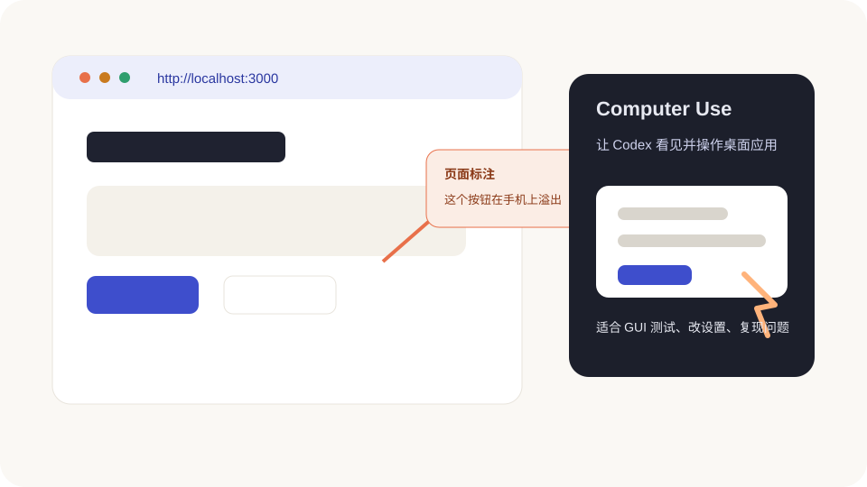

浏览器、标注和电脑操作
有些问题很难用语言说清楚:按钮挤了、卡片歪了、弹窗挡住了、某个桌面软件里才会复现。Codex App 的图形化能力,就是为这种“我看见了,但我讲不专业”的场景准备的。

内置浏览器:边看网页边改
内置浏览器适合预览网页,尤其是你正在做的网站。典型流程是:
- 在内置终端启动本地预览服务器。
- 打开内置浏览器,访问本地地址,比如
http://localhost:3000。 - 看到问题后,在页面上直接标注。
- 回到线程里说:“请处理我刚才在浏览器里留的评论。”
- 改完再打开页面复查。
这比你说“页面有点怪”强很多。你圈在哪里,Codex 就知道从哪里下手。
怎么打开内置浏览器
你通常有三种入口:
- 点击线程里出现的本地 URL。
- 从工具栏打开浏览器,手动输入地址。
- 用快捷键打开浏览器面板:macOS 通常是 Cmd+Shift+B,Windows 以快捷键设置页为准。
内置浏览器最适合 localhost 这类本地预览,以及不需要登录的公开页面。它不带你的 Cookie、扩展和登录状态,这反而更安全。
内置浏览器适合看什么
| 场景 | 适不适合 | 原因 |
|---|---|---|
本地开发页面,比如 localhost | 很适合 | 可以边改边看,还能让 Codex 截图和验证。 |
| 不需要登录的公开网页 | 适合 | 安全边界清楚,不用带你的账号状态。 |
| 本地 HTML / PDF / 图片预览 | 适合 | 能快速确认排版和视觉问题。 |
| 必须登录的网站后台 | 通常不适合 | 内置浏览器没有你的 Cookie 和扩展,需要时再考虑 Chrome。 |
| 支付、账号、安全设置页面 | 谨慎 | 这类页面最好你自己操作,Codex 只做解释或检查。 |
页面标注怎么写才有用
标注不要写“改好看点”。这句话太宽。你可以这样写:
- “这个按钮在手机宽度下文字换行了,请优先保持一行。”
- “这里的卡片上下间距太挤,请增加一点呼吸感。”
- “这个弹窗盖住了下面的价格,请让它不挡住关键信息。”
- “这块文字读起来像广告,请改成教程口吻。”
如果标注工具里能调字体、颜色、间距这类样式反馈,你可以先在页面上试一下效果,再把评论发给 Codex。
标注操作的标准流程
- 打开页面,切到你要检查的状态,比如手机宽度、空数据、错误提示。
- 进入 Annotation 模式。
- 点具体元素;如果要圈一块区域,按住 Shift 再点选区域。
- 写评论,用“现象 + 目标”表达,不要只写“丑”。
- 回到线程,让 Codex “处理浏览器评论,范围尽量小”。
如果你只是想快速发一条评论,某些版本里可以按住 Cmd 点击直接发送。具体快捷方式以你 App 里提示为准。
Browser Use:让 Codex 自己点网页
如果你想让 Codex 自己打开页面、点击、输入、检查状态,可以让它使用 Browser Use。新手可以先记这条规则:
Developer mode:网页疑难杂症再开
有些问题只看页面还不够,比如:
- 页面加载很慢,不知道卡在哪个请求。
- 控制台有红色错误,但你不知道哪个脚本引起。
- 样式被某条 CSS 覆盖,肉眼看不出来。
这时可以在 Browser 设置里开启 Developer mode,让 Codex 使用更深的浏览器调试能力。它更强,也更敏感,因为能看控制台、网络、页面结构等内部信息。只在需要诊断时开,并且看清它要访问哪个网站。
你可以把 Developer mode 理解成“把浏览器开发者工具借给 Codex”。它适合查证据,比如控制台错误、网络请求、DOM 结构、CSS 覆盖关系。普通排版问题不用一上来就开。
Chrome 扩展:用你自己的浏览器状态
内置浏览器不带你的登录状态、Cookie、扩展和历史标签页。如果任务必须用你已经登录的 Chrome,就需要 Chrome 扩展或相关设置。
但这也更敏感。因为网页会把 Codex 的点击当成你的点击。涉及账号、付款、隐私设置时,你要在旁边看着,不要让它自己乱点。
Chrome 扩展怎么安全使用
Chrome 扩展通常通过 Plugins 里添加 Chrome 插件来设置。装好后,Chrome 扩展图标应该显示 Connected。
安全上记住三点:
- 网站权限按域名批准。不确定就只允许当前任务,不要 Always allow。
- 浏览历史很敏感。只有任务真的需要时才允许 Codex 使用。
- 多 Chrome 资料要确认。你可能装在 A 资料里,但当前打开的是 B 资料。
如果 Chrome 连不上,先看扩展是否 Connected、插件是否启用、网站是否在 blocklist,再重启 Chrome 和 Codex。
Computer Use:让 Codex 操作桌面应用
Computer Use 是更进一步的能力:Codex 可以看见并操作 macOS 或 Windows 上的图形界面。它适合:
- 测试一个桌面 App 或模拟器流程。
- 复现只有图形界面里才出现的问题。
- 帮你点设置页面、查看某个软件里的状态。
- 跨多个 App 做一个短流程。
macOS 上通常需要屏幕录制和辅助功能权限。Windows 上要让目标应用保持在当前桌面可见,因为 Codex 会操作前台界面。它不能替你绕过系统授权、管理员密码或应用自己的安全确认。
Computer Use 第一次设置
第一次用时,按这个顺序来:
- 在 Settings 里打开 Computer Use 并安装相关插件。
- macOS 按提示授予 Screen Recording 和 Accessibility 权限。
- 只打开这次任务需要的 App,其他敏感窗口先关掉。
- 让 Codex 只操作一个清晰流程,不要一口气跨很多软件。
- 它请求使用某个 App 时,先确认 App 名称是不是你想给的。
Windows 上 Computer Use 会操作当前桌面前台,所以它工作时你最好别同时用鼠标键盘抢操作。macOS 上如果你只想让它碰一个 App,优先把权限范围锁窄,别把所有正在打开的软件都暴露给它。
Appshots:把当前窗口发给 Codex
Appshots 可以把 Mac 上最前面的窗口作为上下文发给 Codex。适合你正在看一个错误弹窗、设计稿、说明页,懒得描述时。
你可以把它理解成“更顺手的截图 + 文本”。但敏感内容一样要小心:不该给人的窗口,也不要发给 Codex。
Appshots 怎么用
macOS 上可以按两个 Command 键,或你自己设置的 Appshots 快捷键,把最前面的窗口发给 Codex。它通常会捕获窗口图片,有些 App 还能提供可读文本。
适合这样说:
图片生成和非代码文件
Codex App 也能处理不只是代码的任务。你可以让它生成或编辑图片资产,也可以让它产出 PDF、表格、文档、演示文稿这类文件。想明确让它走图片生成能力,可以在提示词里写 $imagegen。
说需求时要补三样东西:
- 你要的文件类型:图片、PDF、Excel、PPT 等。
- 内容结构:有哪些章节、列、图表或页面。
- 验收标准:你最在意排版、数据准确、还是能不能打印。
如果它生成了文件,让它告诉你保存在哪里,并说明它怎么检查过。
图形化能力的安全边界
- 网页和桌面应用里的内容都可能被 Codex 看到,敏感窗口先关掉。
- 涉及账号、支付、隐私、安全设置,人在旁边看着。
- 不要让 Codex 在你不理解的情况下批量点击。
- 它点错窗口时,立刻停止任务。
什么时候不要用图形化能力
有些场景更适合文字、文件或插件,不要强行让 Codex 看屏幕:
- 要分析一个很长的文档:优先传文件或用对应插件。
- 要处理数据库或表格:优先用结构化工具,别让它肉眼抄屏幕。
- 要改代码:优先让它读文件和看 diff,屏幕只当补充证据。
- 涉及密码、支付、账号安全:你自己操作,Codex 只在旁边解释。
图形化能力是“看见问题”的工具,不是“放弃审查”的理由。